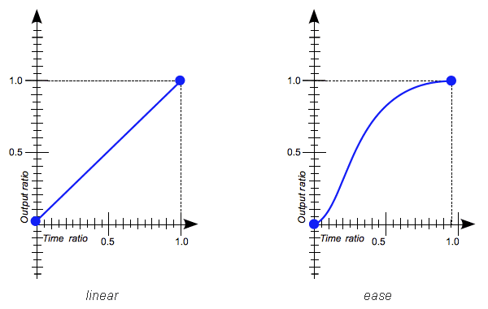
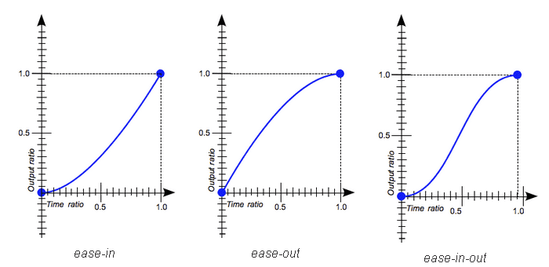

Функции кубических кривых Безье
В CSS функции кубических кривых Безье используются, чтобы задать темп переходов и анимаций.
cubic-bezier(x1, y1, x2, y2)Значения x и y — это координаты контрольных точек кривой на графике, по оси X которого откладывается продолжительность анимации, а по оси Y — её прогресс.
Значения x допустимы только в диапазоне от 0 до 1.
Сервис, помогающий разобраться в функциональном представлении кривых Безье.
Пример:
cubic-bezier(0, 0, 1, 1) /* linear */
cubic-bezier(0.42, 0, 1, 1) /* ease */
Псевдонимы функций:
- linear — переход равномерный, без ускорений и замедлений.
- ease — начинается медленно, затем ускоряется и к концу движения опять замедляется.
- ease-in — начинается медленно, а к концу ускоряется.
- ease-out — начинается быстро, а к концу замедляется.
- ease-in-out — похоже на ease, то есть переход начинается и заканчивается медленно, но происходит это чуть интенсивнее.
